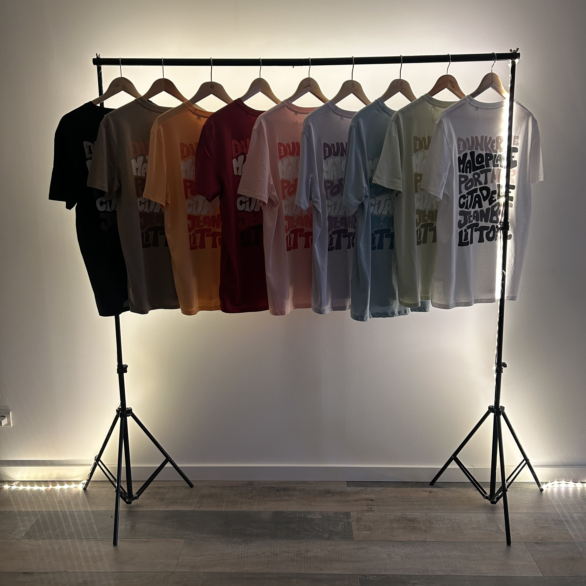
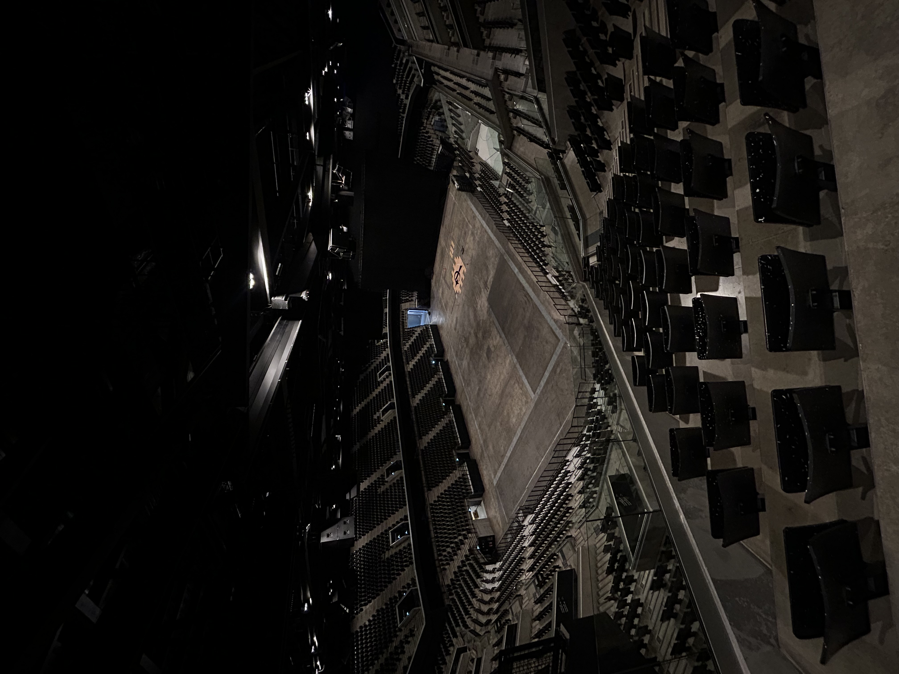
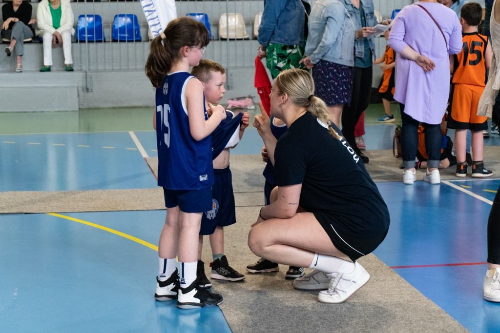
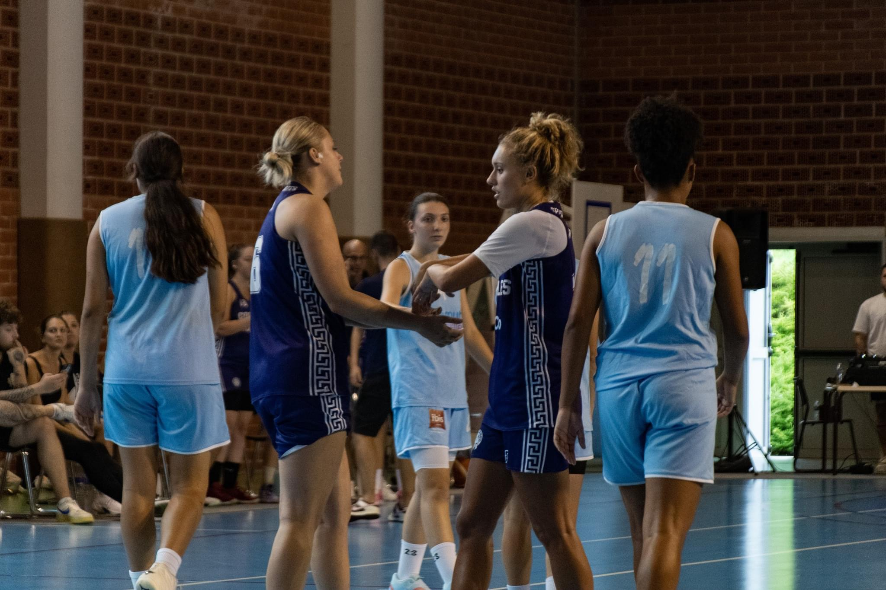

Formations
-
ADGM Web et Multimédia
2DSB Dunkerque 09/2026 Formation en alternance 1 semaine FAC/ 1 semain entreprise

-
Formation en événementiel et marketing sportif
Ecole du Marketing Sportif 09/2024-09/2026. Acquisition de connaissances en marketing sportif et en organisation événementielle. Participation à des séminaires et rencontres professionnelles. Découverte de structures sportives et d’acteurs du secteur (Nantes, Lyon, Toulouse et Paris).

-
BPJEPS Basket-ball
Professionnelle dans le domaine de l’encadrement sportif et du basket-ball 08/2023-08/2024.

-
STAPS
ULCO Calais Première année d’études en sciences et techniques des activités physiques et sportives.

-
Baccalauréat
Lycée Léonard de Vinci à Calais
COMPÉTENCES
Communication et marketing Création de contenus pour les réseaux sociaux.
Développement de l’image de marque. Mise en valeur de produits et de services. Événementiel et gestion de projet Organisation et coordination d’événements sportifs. Gestion des relations partenaires avec suivi des prestations. Gestion des commandes et suivi de boutique.Numériques et création
Canva / Adobe Photoshop / Adobe Illustrator / Adobe InDesign / Adobe Premiere Pro